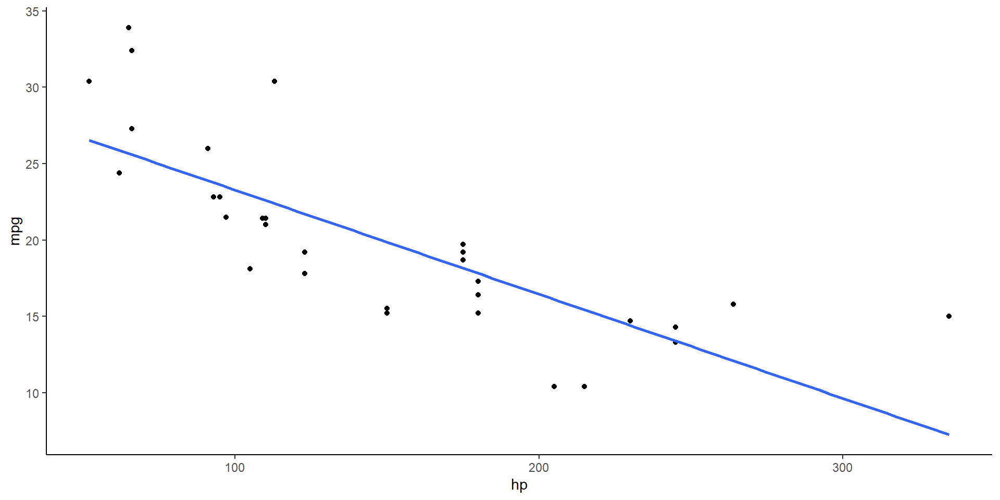
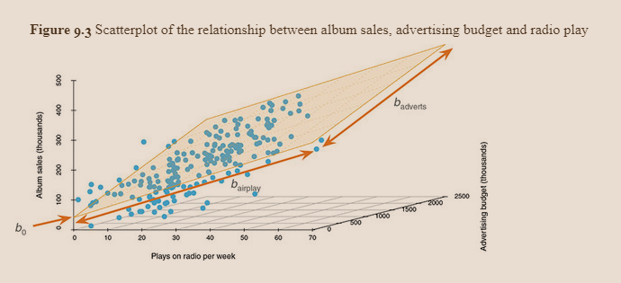

Pearson's product-moment correlation
data: mtcars$hp and mtcars$mpg
t = -6.7424, df = 30, p-value = 1.788e-07
alternative hypothesis: true correlation is not equal to 0
95 percent confidence interval:
-0.8852686 -0.5860994
sample estimates:
cor
-0.7761684 Regression
Jonathan A. Pedroza, PhD
Regression

Regression

Regression

Regression

Regression

Regression
- Okay, I’m done…

just one more
Regression
The reason I’m excited is because regression is one of the most important, useful, and powerful tools you can learn
It can pretty much do everything we have covered so far
comparing two groups –> t-test
it can do this by dummy coding a variable into a reference group and the other group and will compare them
the test in the regression is actually a t-test comparing if there was a difference between your group and zero (no change)
comparing multiple groups –> ANOVA
- dummy coding and comparing one group (reference group) to the other groups
interactions –> factorial ANOVA
- it can do that with some dummy coding and then splitting groups by the second variable (moderator) to then run the analyses separately for reach group (simple effects)
interactions with continuous variables –> regression
interactions with continuous and categorical variables –> regression
Difference between Correlation and Regression
Both focus on relationships
regression focused more on the direction of a relationship
- which is the IV and which is the DV
correlation only states if the two variables are positively or negatively related
- “there is a relationship present”
regression is scale dependent
coefficients are expected change on average in your outcome given a one-point/one-unit increase in your predictor
- “For a one point increase in horsepower, there is a ______ average increase/decrease in MPG”
a standardized regression coefficient in a simple linear regression is the same thing as a correlation coefficient
Example
Example
lm(formula = mpg ~ hp, data = mtcars)
coef.est coef.se t value Pr(>|t|)
(Intercept) 30.10 1.63 18.42 0.00
hp -0.07 0.01 -6.74 0.00
---
n = 32, k = 2
residual sd = 3.86, R-Squared = 0.60
Call:
lm(formula = mpg ~ hp, data = mtcars)
Standardized Coefficients::
(Intercept) hp
0.0000000 -0.7761684 Variety of Regressions
linear regression
logistic regression (binary/dichotomous outcome)
multinomial regression (several levels/categories in outcome)
spatial regression (takes into account the spatial nature of what you are testing)
poisson regression (count/ordinal variable as your outcome)
structural equation modeling (super duper regression… with theory)
mixed-effect/multi-level/hierarchical modeling (takes into account those random variables)
- nested data: Ex: students within schools within districts within states
Variety of Regression

Back to Basics
- lets get back to our model equation
\[ outcome_i = (b_1X_i) + error_i \]
\[ outcome_i = (b_0 + b_1X_i) + error_i \]
\[ Y_i = (b_0 + b_1X_i) + \epsilon_i \]
still looking at our outcome \(Y_i\), our \(X_i\) as our predictor, and \(b_i\) as the parameter that quantifies the relationship with the outcome
- the \(b_i\) value is also an unstandardized measure of the relationship between \(X_i\) and \(Y_i\)
\(b_0\) or our intercept, now tells us the average value of our outcome when the predictor is at zero
- no longer is it the average value of the outcome
What is \(b_1\) now in this relationship?
\[ outcome_i = mx + b \]
Back to Basics
Back to Basics
lm(formula = mpg ~ hp, data = mtcars)
coef.est coef.se t value Pr(>|t|)
(Intercept) 30.10 1.63 18.42 0.00
hp -0.07 0.01 -6.74 0.00
---
n = 32, k = 2
residual sd = 3.86, R-Squared = 0.60Back to Basics
the \(b\) values are referred to as regression coefficients
- can also be callled unstandardized coefficients
let’s look at our example between a car’s horsepower and miles per gallon
Regression Example
\[ MPG_i = b_0 + b_1HP_i + \epsilon_i \]
- with the estimation of our \(b\) values above, we would be able to make a prediction about MPG by replacing the value of HP with a new value
\[ MPG_i = 30.10 + (-0.07*200) + \epsilon_i \]
\[ MPG_i = 30.10 + (-14) + \epsilon_i \]
\[ MPG_i = 16.1 + \epsilon_i \]
so if we had a car with 200 HP, then the MPG for the car would be 16.1
which is pretty bad for a car
this value is now our predicted value, or what we predicted from examining a specific value
the error value \(\epsilon\) is left in because this prediction is properly not the most accurate
Linear Model with Several Predictors
the best part about linear regression is when you include all your predictors that are empirically (past literature) and/or theoretically relevant (theory testing)
- this makes the linear regression –> multiple (linear) regression

Linear Model with Several Predictors
\[ Y_i = (b_0 + b_1X_{1i} + b_2X_{2i}) + \epsilon_i \]
\[ Y_i = (b_0 + b_1HP_i + b_2Disp_i) + \epsilon_i \]
Linear Model with Several Predictors
Linear Model with Several Predictors
the new model now has the b values for both the variables included in the model
- and the intercept
the difference in distance between the regression plane (orange) and the blue points is the residuals, or the error, of the model
JP: not the biggest fan of 3D visuals and it is really only helpful for models with 2 variables
- any more variables and it gets difficult to visualize
Linear Model with Several Predictors
lm(formula = mpg ~ hp + disp, data = mtcars)
coef.est coef.se t value Pr(>|t|)
(Intercept) 30.74 1.33 23.08 0.00
hp -0.02 0.01 -1.86 0.07
disp -0.03 0.01 -4.10 0.00
---
n = 32, k = 3
residual sd = 3.13, R-Squared = 0.75Linear Model with Several Predictors
lm(formula = mpg ~ hp + disp + as.factor(cyl), data = mtcars)
coef.est coef.se t value Pr(>|t|)
(Intercept) 31.15 1.77 17.63 0.00
hp -0.02 0.01 -1.49 0.15
disp -0.03 0.01 -2.50 0.02
as.factor(cyl)6 -4.05 1.69 -2.40 0.02
as.factor(cyl)8 -2.43 3.24 -0.75 0.46
---
n = 32, k = 5
residual sd = 2.89, R-Squared = 0.80Terminology
outcome = dependent variable
predictor = independent variable
when a model only has one predictor, then it is a simple linear regression
when a model has 2+ predictors, it is a multiple regression
Regression Coefficient Values
in both simple and multiple linear regressions, you have actual scores and predicted scores
actual scores are the values that are provided by participants in your study
predicted scores are the values that are predicted by the regression line
Estimating the Model
Estimating the Model
remember that we estimated the model previously by looking at the deviations between the model and the data collected
with regressions, we can do the same thing
the distance between the predicted line and the data points are called residuals
- they are the same thing as deviations when we look at the mean
when we squared the differences between the observed values and the outcome and the predicted values that come from the model, we can get the total error in the model
\[ total\;error = \sum^n_{i = 1}(observed_i - model_i)^2 \]
similar to when we assessed the fit of the mean using the variance, we used the sum of squared errors/sum of squares, we can do the same thing with the residuals to get the sum of squared residuals or the residual sum of squares
similar to the ANOVA
this is what is left over that our model does not account for/predict
Assessing Goodness of Fit
goodness of fit is a term for how well our model fits the data
- you can have a model that has significant relationships but it can still have a horrible fit
in order to assess the goodness of fit, we must first fit a baseline model then compare it to the model with our predictors included
we then calculate the \(SS_R\) and the new model should have significantly less error within it than the baseline model
this assesses the inaccuracy of our regression model
our baseline model will be the average outcome variable
- essentially a model with only the intercept included in the model
the sum of squared differences or total sum of squares (\(SS_T\)) represents how well the mean as a model is
model sum of squares is what our model accounts for
- the improvement our model makes over the baseline model
\(R^2\) still tells us how much of the variation is “explained’ with our predictor(s)
still use the mean squares values to get the averages for our model and residual
\[ MS_M = \frac{SS_M}{k} \]
\[ MS_R = \frac{SS_R}{N - k - 1} \]
\(k\) is now the number of predictors in our model
\(N\) is still the sample size/number of observations
\[ F = \frac{MS_M}{MS_R} \]
our F test will still be calculated the same way
we can also use the F test to calculate the significance of our \(R^2\) value
\[ F = \frac{(N - k - 1)R^2}{k(1 - R^2)} \]
Assumptions of the Linear Model
linearity
- is the assessment that the relationship between your predictor and outcome is a linear relationship
independent Errors
your residuals should be uncorrelated, often this is referred to as autocorrelation
Durbin-Watson test can test for this assumption
checks to make sure your residuals are not correlated with one another
the test has a range of 0-4, with a value of 2 meaning that the residuals are uncorrelated
greater than 2 indicates a negative correlation
value below 2 indicates a positive correlation
homoscedasticity
the variation of the residual terms should be constant
the amount of actual scores should be roughly the same around the regression line
Assumptions of the Linear Model
normally distributed errors
your residuals should show a normal distribution if plotted with a histogram
if you have issues with this, you can bootstrap your confidence intervals and ignore this assumption
predictors are uncorrelated with external variables
external variables are variables that haven’t been included in the model and can influence the outcome variable
- confounding variables
variables that are relevant should be included in the model
- used to control/adjust for these variables and get the best understanding of the unique relationships between your predictor of interest and your outcome
Assumptions of the Linear Model
variable types
- make sure your categorical variables are dummy coded to be included in the model
no perfect multicollinearity
your predictors that are included in the model should not have perfect (or near perfect correlations) with other predictors in the model
- threshold is ~.7 or somtimes .9
non-zero variance
make sure there is variation in your variables
not everyone has the same score